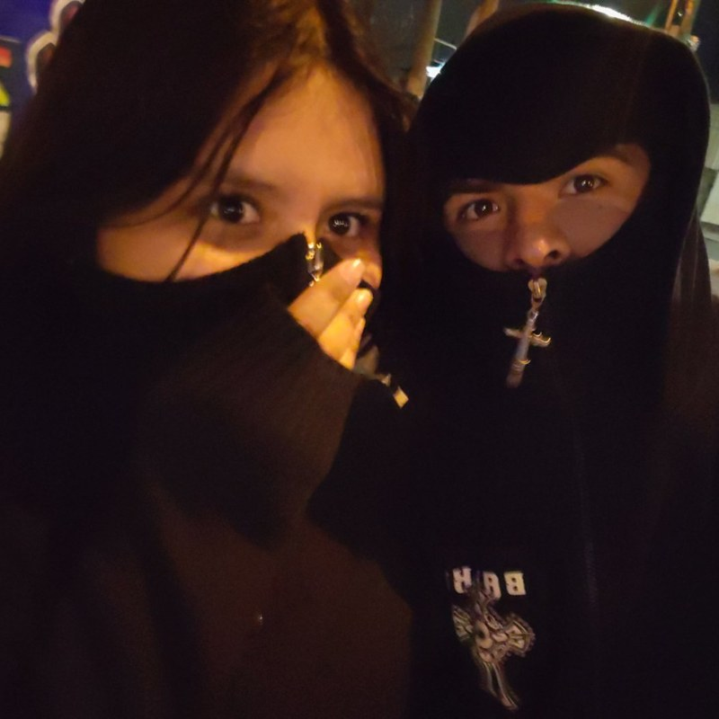
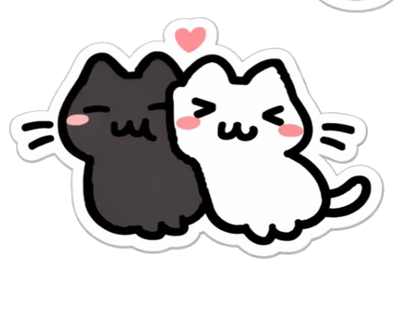
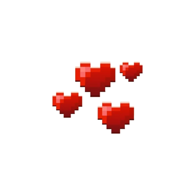
Desliza despacito ↓
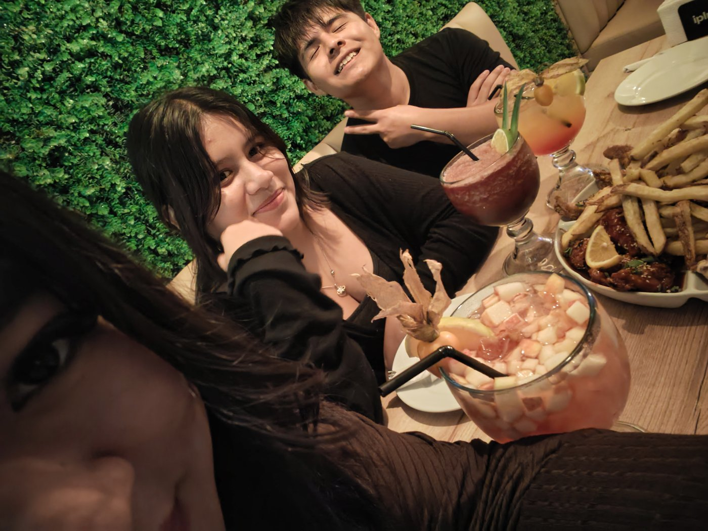
Antes que nada…
Te pido perdón de antemano. Sé que no soy precisamente el hombre más romántico del mundo, que quizás no siempre encuentro las palabras adecuadas y que, en ocasiones, mi manera de expresar lo que siento no es la más convencional. Pero hay algo que creo que no necesitas que te diga, porque puedes verlo en mis ojos cada vez que te miro, o incluso en mis manos, que parecen olvidar cómo comportarse cada vez que rozan las tuyas.
Me gustas. Y creo que eso ya es bastante evidente.
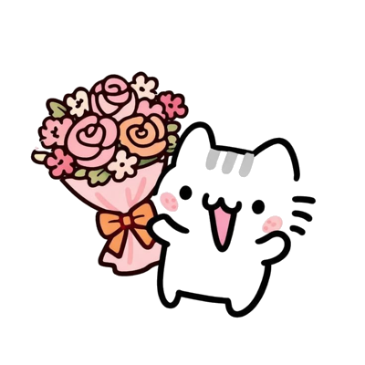
Mi pequeño mundo de fantasías
Vivo en un pequeño mundo de fantasías en el que, de una u otra manera, siempre apareces tú. A veces me descubro imaginando momentos que todavía no suceden, conversaciones que aún no tenemos y lugares que algún día podríamos conocer. Y si eso no es amor, sinceramente, no sé qué nombre darle. Lo que sí sé es que quiero seguir descubriendo esta sensación, conocer cada una de sus formas y entender por qué alguien como tú puede provocar tantas cosas en alguien como yo.
No quiero apresurarme a ponerle un nombre a todo lo que siento, pero tampoco quiero hacer como si no estuviera pasando. Me gustas, me encantas y quiero seguir conociéndote. Quiero descubrir esas pequeñas partes de ti que todavía no conozco, esas que quizás no le cuentas a cualquiera, esas manías que te hacen ser tú y que, sin darme cuenta, terminan convirtiéndose en mis detalles favoritos.
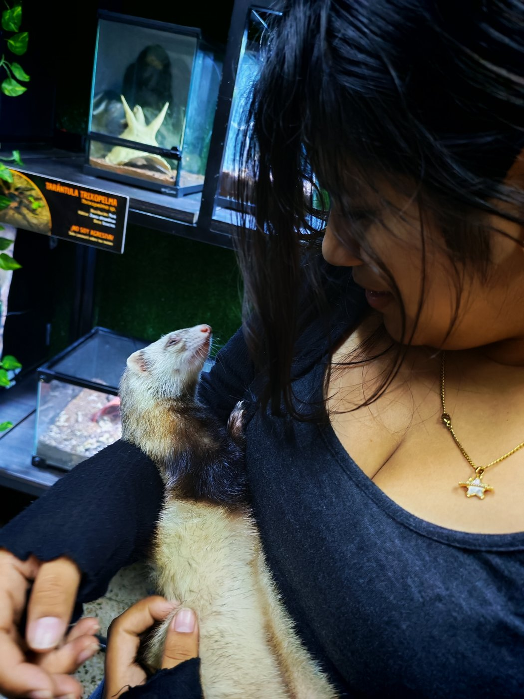
Lo que sí puedo darte
Perdóname también por no poder darte, al menos por ahora, todo lo que quisiera. Créeme que, si estuviera en mis posibilidades, me encantaría llenarte de regalos, sorprenderte con pequeños detalles, aparecer con un ramo de flores sin necesidad de que exista una fecha especial y encontrar mil maneras de alegrarte los días. Me gustaría consentirte, invitarte a conocer lugares nuevos, cumplirte antojitos y hacer que tengas muchos motivos para sonreír.
Pero mientras llega el momento en el que pueda hacerlo, quiero que sepas que hay algo que sí puedo darte desde ahora:
(abre los regalitos)
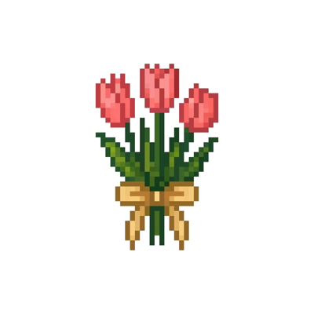
Indiscutiblemente hermosa
Porque, si algo tengo claro, es que eres una chica indiscutiblemente hermosa. Y no quiero que pienses que lo digo únicamente por tu físico. Eres inteligente, capaz, perseverante y, sobre todo, tienes una personalidad que me encanta. Aunque debo admitir que esa perseverancia tuya también se hace notar cuando debatimos, porque parece que rendirte no está dentro de tus opciones. Jajajaja.
También he podido notar la hermana tan bonita que eres. Cada vez que te escucho hablar de Yeico, cada vez que veo cómo lo cuidas, cómo estás pendiente de él y la manera en la que te preocupas por su bienestar, inevitablemente llegan a mi cabeza pequeñas escenas imaginando cómo serías en un futuro como madre. Y no sé qué nos tenga preparado la vida, pero de algo no tengo dudas: si algún día decides serlo, estoy seguro de que serás maravillosa.
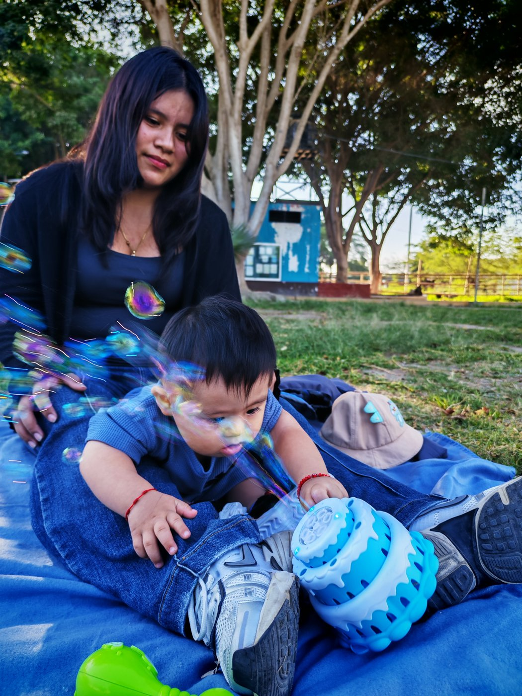
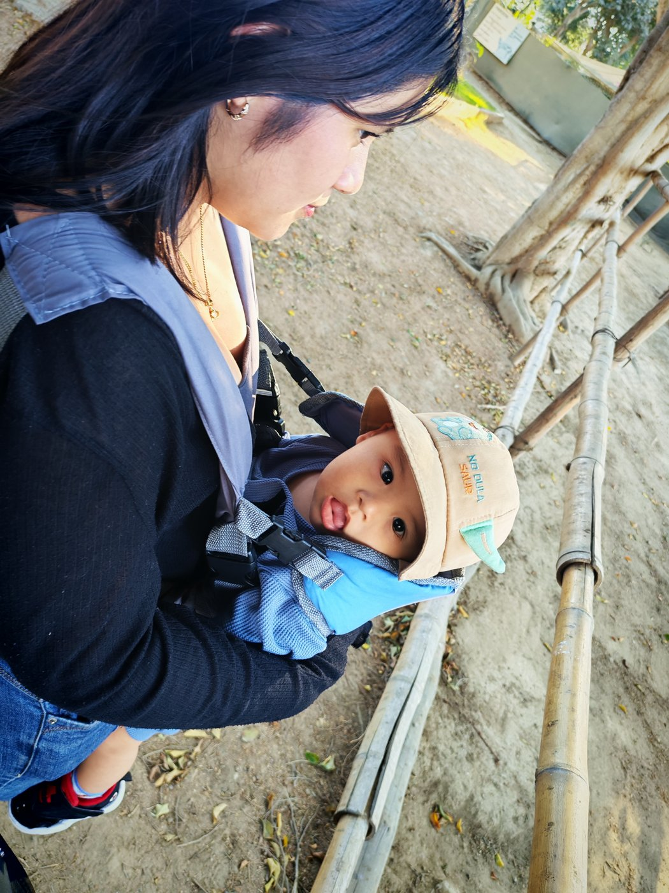
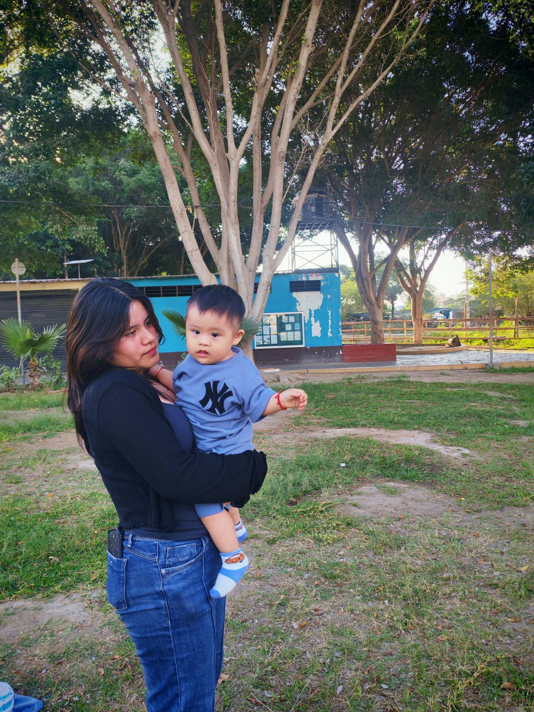
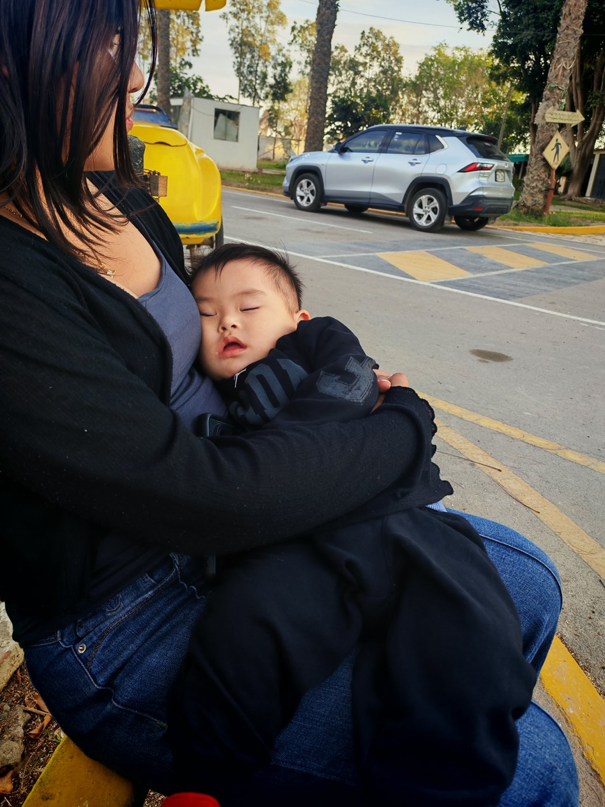
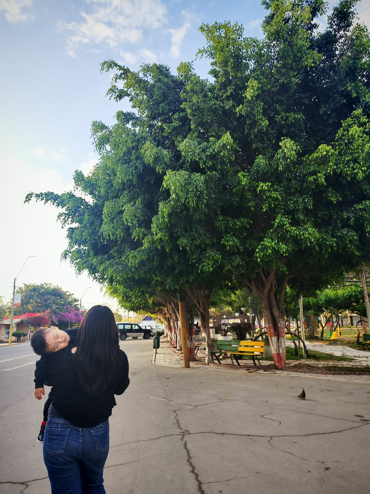
Tienes una belleza que va mucho más allá de lo que los ojos pueden apreciar. Eres hermosa por fuera, sí, pero también tienes una forma de ser, de cuidar, de preocuparte y de querer que hace que esa belleza sea todavía más grande.
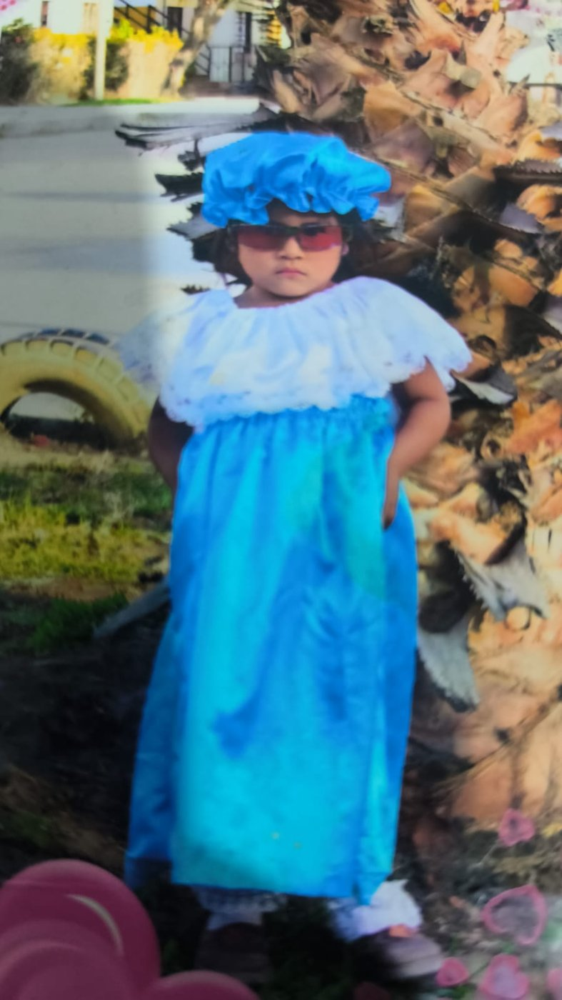
Lista de evidencias 🕵️
Y hablando de conocerte, quiero que sepas algo: quizás tenga una memoria un poquito cuestionable, quizás sea descuidado con algunas cosas y a veces parezca que se me escapan los detalles, pero créeme que contigo hago el esfuerzo de recordar hasta las cosas más pequeñas.
Es más, si no me crees, tengo una pequeña lista de evidencias. JAJAJA. (toca cada tarjetita)
Recuerdo tus antojitos, esos pequeños deseos que mencionas casi sin darte cuenta. Y quiero que sepas que recuerdo todas esas cosas porque me gusta escucharte. Me gusta cuando me cuentas lo que te gusta, lo que no soportas, lo que te hace feliz e incluso aquello que te molesta. Porque para mí conocerte no consiste solamente en saber cuál es tu color favorito o qué comida prefieres, sino también en aprender esas pequeñas particularidades que te hacen diferente a todas las demás.
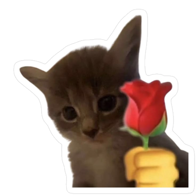
Antojitos pendientes
Quizás hoy no pueda cumplirte todos esos gustitos, quizás todavía tengamos varios lugares pendientes, pero me gustaría que durante este tiempo podamos ir tachando algunas cosas de esta lista:
(toca uno para tacharlo cuando lo cumplamos)
Y no quiero hacerte promesas enormes que después se queden solamente en palabras. Prefiero que, poquito a poquito, podamos construir recuerdos que hablen por sí solos.
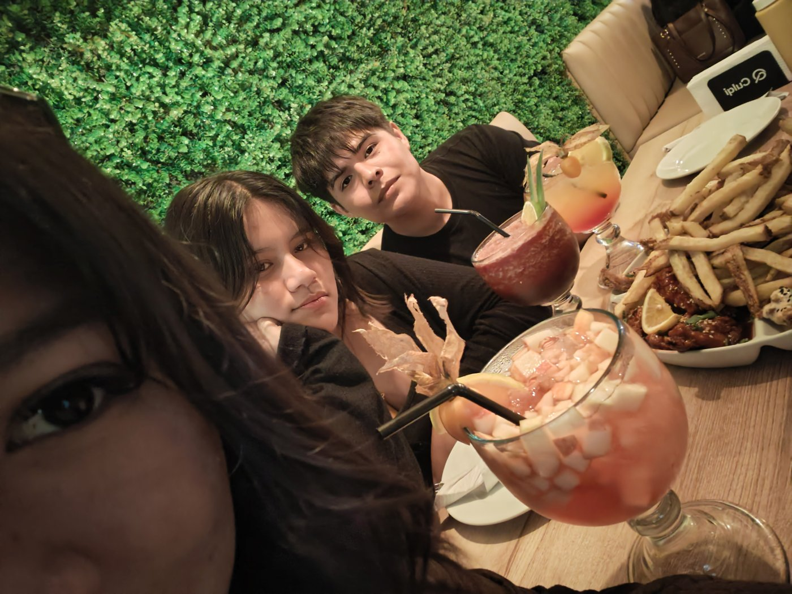
Qué me hizo fijarme en ti
Ahora bien, creo que debería explicarte qué fue exactamente lo que me hizo fijarme en ti, aunque, siendo sincero, todavía no sé si podría enumerar una sola razón.
Me enamoré de tu personalidad.
De esa manera tan tuya de hacerme reír incluso cuando estoy con mi característica cara de poto. De cómo se te forman esos dos hoyuelitos en los cachetes cuando sonríes. De ese ojito que se te achina cuando haces alguna de tus miraditas. De tu tonito de voz, ese que, aunque no lo creas, ya vive instalado en mi cabeza y parece que no piensa pagar alquiler.
Es curioso, porque incluso cuando hablamos por chat, leo tus mensajes e imagino perfectamente el tono y la emoción con los que los escribiste. A veces hasta reproduzco mentalmente tu voz mientras leo lo que me mandas. Y cuando estamos frente a frente, me descubro imaginando qué podrías responderme incluso antes de que termines de escucharme.
Me gusta escucharte, observar tus expresiones, descubrir tus gestos y prestar atención a esas pequeñas cosas que quizás tú haces sin darte cuenta, pero que yo termino guardando en mi memoria.
Y no, tu físico tampoco se queda atrás. JAJAJA. Eres inefablemente hermosa. Tienes dos bracitos que, debo admitir, parecen hechos para llenarlos de pellizquitos y unas mejillas que tampoco pienso dejar tranquilas. Pero más allá de las bromas, hay algo que me encanta todavía más: esa combinación entre tu belleza y esa personalidad tan simpática que tienes.
Porque puedes estar frente a mí y, sin hacer demasiado, conseguir que se me escape una sonrisa. Puedes cambiarme el ánimo con una conversación cualquiera, con una ocurrencia o simplemente con tu presencia.
No necesitas hacer nada extraordinario para convertir un momento ordinario en uno que quiera recordar.
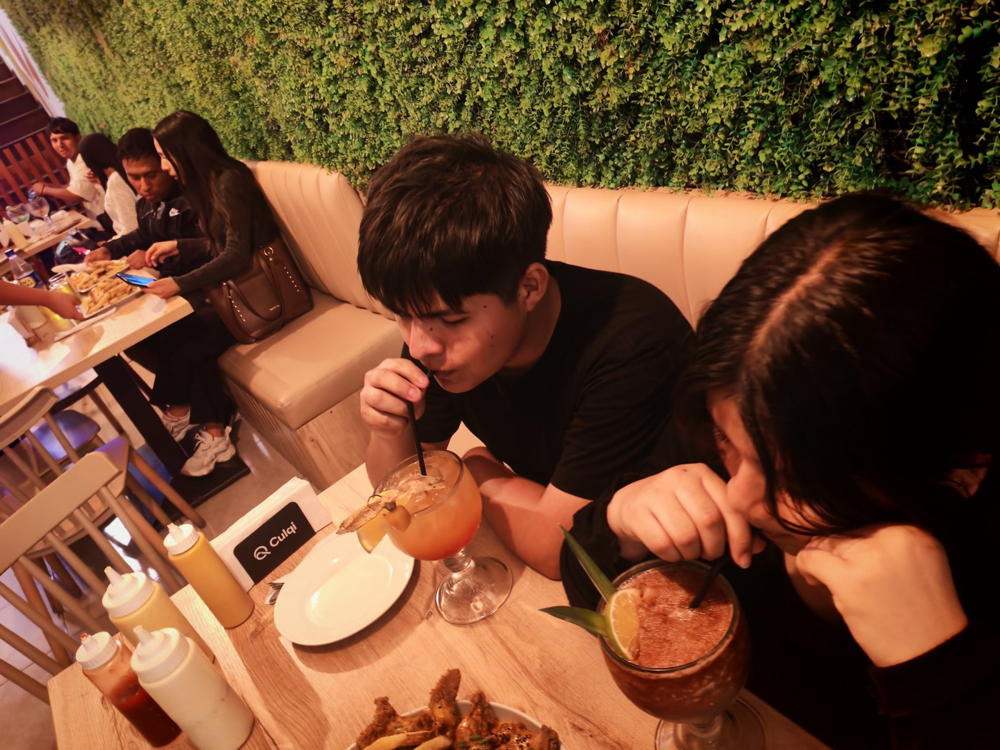
Mi manera de quererte
Perdóname si mi manera de demostrarte cariño no es exactamente a la que estás acostumbrada. Quizás no siempre sea el más detallista, quizás me falten palabras bonitas o no sepa cómo reaccionar ante ciertos momentos románticos. Pero hay algo que quiero que tengas muy presente: no confundas mi falta de romanticismo con una falta de sentimientos.
Porque, si hay una manera en la que definitivamente sé demostrarte cariño, es molestándote.
Me encanta joderte. Vivo para joderte. Encuentro cualquier excusa, cualquier oportunidad y cualquier pequeño motivo para fastidiarte un ratito. Y lo peor es que probablemente nunca me canse de hacerlo. Así que, si alguna vez te preguntas cuál es una de mis mayores muestras de cariño, recuerda que tienes a alguien dispuesto a sacarte de quicio solamente para conseguir que te rías.
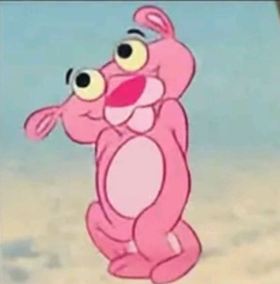
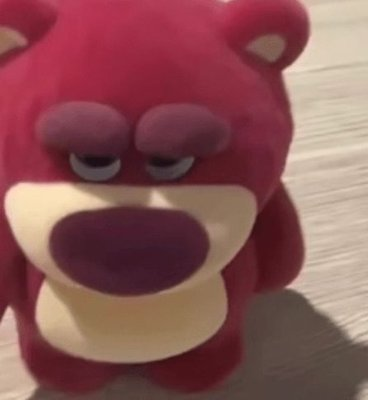
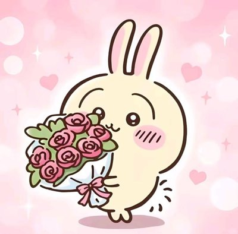
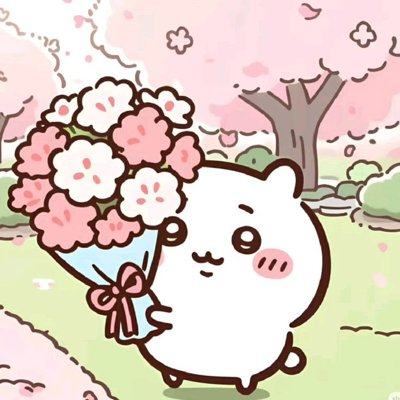
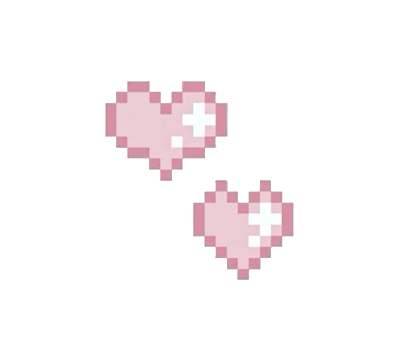
Lo que quiero ser para ti
Aunque también quiero ser esa persona con la que puedas hablar cuando no tengas un buen día, con quien puedas compartir tus preocupaciones sin sentir que tienes que fingir que todo está bien. Quiero escucharte cuando tengas mucho que contar y acompañarte incluso cuando no tengas ganas de decir absolutamente nada.
Quiero conocer tus días buenos, pero también aprender a acompañarte en los no tan buenos. Quiero celebrar tus logros, emocionarme con tus pequeñas victorias y recordarte lo capaz que eres cuando tú misma llegues a dudarlo.
No pretendo ser alguien perfecto, porque definitivamente no lo soy. Tengo mis defectos, mis descuidos, mis ocurrencias y probablemente muchas cosas por mejorar. Pero sí quiero ser alguien que te permita sentirte tranquila, querida, valorada y libre de ser tú misma.
Y si algo me gustaría pedirte es que nunca sientas que tienes que cambiar tu manera de ser para agradarme. Me gusta esa chica que se ríe, que bromea, que debate hasta el último argumento literal, que tiene sus antojitos, sus manías, sus ocurrencias y sus pequeñas peculiaridades. Me gusta esa versión de ti que aparece cuando estás siendo completamente tú.
Así que no dejes de serlo.
Misión pendiente: 2 TB
Y bueno, creo que esto ya dejó de parecer un simple poema o una dedicatoria. Digamos que quiero que sea la pequeña introducción a lo que podría convertirse en el inicio de algo nuevo. No sé exactamente qué nombre tendrá lo nuestro más adelante, tampoco quiero adelantarme a escribir capítulos que todavía no hemos vivido. Pero sí sé que me gustaría descubrirlos contigo.
Quiero que sigamos conociéndonos, que tengamos más conversaciones interminables, más risas, más bromas, más debates en los que probablemente ninguno de los dos quiera dar su brazo a torcer. Quiero más miradas, más momentos inesperados y, sobre todo, más fotografías.
Porque, siendo sinceros, nuestra pequeña galería de fotos juntos se está quedando bastante corta:
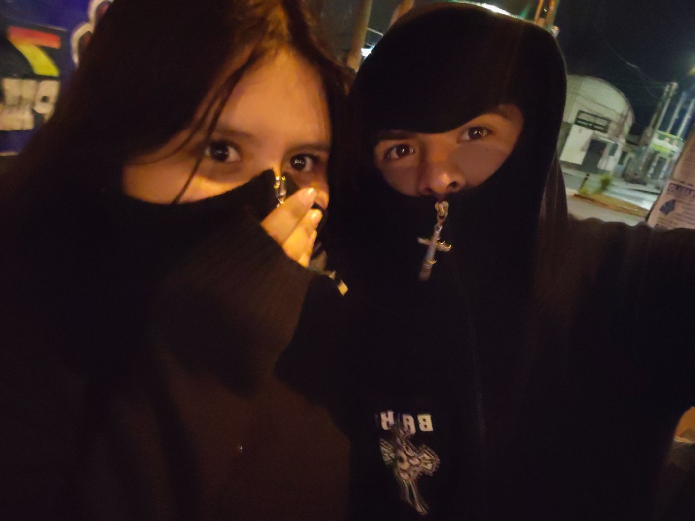
Así que ya sabes, tenemos una misión pendiente: expandirla. Y no estoy hablando de unos cuantos megas, estoy hablando de un mínimo de dos terabytes contigo. JAJAJA. Aunque, conociéndome, probablemente termine necesitando almacenamiento ilimitado.
Quiero que algún día podamos mirar todas esas fotografías y recordar cómo empezó todo. Que podamos ver una foto y decir: «¿Te acuerdas de ese día?», y que detrás de cada imagen exista una historia, una anécdota o alguna tontería que solamente nosotros entendamos.
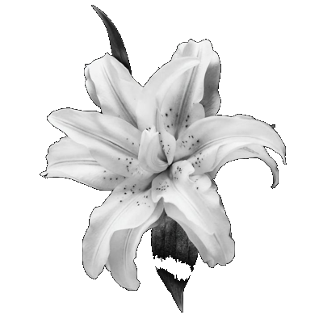
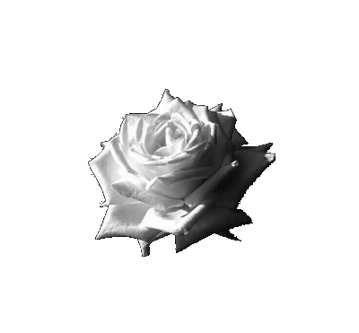
Apenas estamos comenzando
No sé cuántas páginas nos quedan por escribir, ni qué sorpresas nos tendrá preparadas la vida, pero me gustaría que no tengamos que descubrirlo todo de golpe. Que vayamos despacio, disfrutando cada momento, sin saltarnos ninguna parte de esta historia.
Y si me preguntas qué espero de todo esto, creo que mi respuesta es bastante sencilla: quiero seguir eligiendo conocerte.
Quiero seguir descubriendo qué te hace feliz, qué te emociona, qué te da miedo, qué sueños tienes y cuáles son esas pequeñas cosas que todavía no me has contado. Quiero aprender a quererte de la manera en la que te gusta que te quieran, sin dejar de ser yo en el proceso.
Así que perdóname si no soy el más romántico, si mis palabras a veces se enredan o si termino haciendo alguna broma justo cuando debería decir algo bonito. Es mi manera de ser, y espero que, entre tantas bromas, también puedas encontrar la sinceridad de todo lo que intento expresarte.
Porque, aunque no siempre sepa cómo decirlo, me gustas muchísimo.
Y si hay algo que tengo claro es que todavía me quedan demasiadas cosas por conocer de ti, demasiados lugares por visitar contigo, demasiados antojitos por cumplirte y demasiadas fotografías por tomar.
Así que no te me vayas a cansar tan rápido, que apenas estamos comenzando.
Con cariño, el chico que probablemente no sea el más romántico, pero que le encanta joderte.
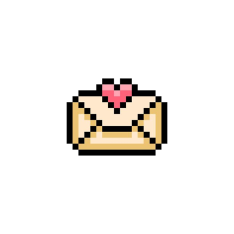
La espera valdrá la pena
Cada segundo que pasa es un segundo menos para volver a verte ✨
8 de diciembre · 3:00 p.m.